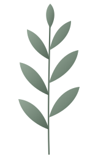

A little something for you.
For everything you’ve been carrying…
You deserve something beautiful, too.
Each stem in this arrangement was chosen for a quiet reason. Tap or select any bloom to discover what it holds.
Language of the blooms
Tap each flower to read its meaning

You spend so much time being there for others. I hope you never forget that you deserve someone who shows up for you, too.